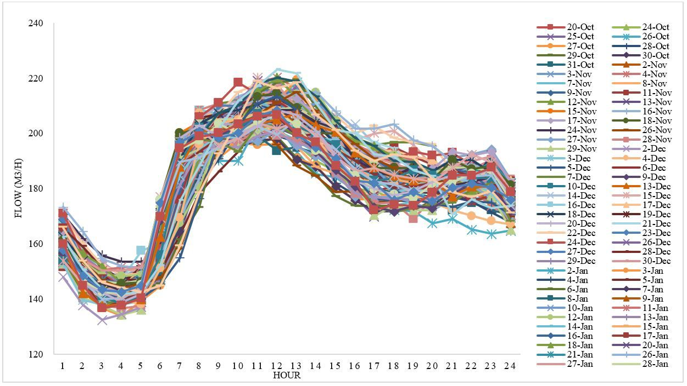

Introduction
The planning and development of cities must consider as a fundamental part, the existing urban
infrastructure and the engineering works planned for the future, in this field play a very important
role
sanitation networks and urban drainage systems [1], which must be built for an
established design period and
for which the expected future flows must be projected [2]; as well as, its efficient
operation, thanks to
different factors; such as budgeting adequate maintenance [3]. The projected flows for
a region or city have
a direct relationship with the variation of the climate, the socioeconomic condition, the number of
inhabitants and the habits of life, work and consumption [4].
The proper design of sewerage systems depends on the correct estimation of the magnitude of expected
flows
in the network and unexpected or poorly projected variation in the range of expected flows can affect
the
hydraulic performance of some components of sanitation systems, for example, sewage pumping stations,
final
discharge outfalls and wastewater treatment plants (WWTP), which are designed with the maximum and
minimum
flows of the system [5], [6]. The appropriate way to estimate the
expected wastewater flows is by using
information from consumption patterns and existing wastewater monitoring campaigns in each city or
community
[1], previously carried out at different points of the network. In addition, in which
information is
available on the hourly variation of the flow, real magnitude of domestic, industrial, commercial and
institutional wastewater flows. Also, the factors that represent the characteristics of each system: the
return coefficient and the flow increase factor [2], [7]. The
reliability of wastewater flow estimates
depends on these factors [8].
In the absence of this information, the flow variation and the factors of the system to be designed must
be
estimated with existing empirical equations, which are the product of research conducted in other cities
in
the world and that generally differ have very different characteristics to the cities and populations of
Colombia [9]. These equations are the result of field measurements and engineering
criteria and have as
variables the number of inhabitants and the average daily flow of wastewater [10],
also taking into account
parameters recommended in books on wastewater engineering recognized in the academic world; but the
parameters obtained do not adequately represent the behaviour of the system to be designed and can
sometimes
oversize the components of the drainage system, especially in small cities [11], [12].
To measure the temporal and spatial variation of inflows into sewerage systems, several authors have
established different methodologies and some of these allow integrating the variation of wastewater flow
rate over time, with the variability of physical and chemical parameters that determine water quality
for
dry and wet climate conditions [13]. The main objective of this article is to
estimate the factors of the
sanitary sewerage system of San José de Cúcuta, for this was implemented for 19 weeks and for 24 hours a
day, monitoring the flow of wastewater and to perform the analysis of the data measured in the period of
measurements, The hourly variation of the incoming flow to the system was obtained, as well as the
maximum,
average and minimum flows that are contributed to the drainage system, based on the measured flows, the
increase factor that represents the characteristics of the city was determined; The factor obtained was
also
compared with the results calculated using the empirical equations existing in the underlying theory of
sanitary sewer design, and it was possible to identify which of these equations best fitted the
monitoring
data measured in the monitoring campaigns.
Materials and methods
Materials
Wastewater flow monitoring was conducted for 19 weeks (136 days), from October 20, 2019 to March 3, 2020;
a
single flow measurement point was implemented, identifying a confluence location of a network of
collectors
of the sanitary sewer system. The network is bounded by topography and forms a natural catchment of the
terrain that forms a closed network, whose drainage system converges to a final discharge point or final
discharge collector.
For the monitoring campaign an ultrasonic flow meter data logger reference LT-US Sofrel was used, with
this
meter data was obtained from the incoming flow to the system every 15 minutes, 24 hours a day. The
measured
data were stored in the internal memory of the device and then transmitted twice a day to a web server
(MyWebScada), the specific times of data transmission to the server were previously programmed in the
configuration of the equipment. The stored information could be viewed, managed and downloaded.
Rainfall events affect the incoming flow to a sanitary sewer system. If there are erroneous connections,
caused by clandestine storm sewer connections that discharge into the sanitary sewer network, there are
increases in flow that exceed the hydraulic capacity of the projected collectors, generating overflows
on
the surface of the inspection chambers [14]. The sanitary sewage system of San José
Cúcuta is characterized
by the existence of erroneous connections, mainly due to the absence of storm sewers in several sectors
of
the city; this, despite the fact that for several decades the city has presented multiple
characteristics of
a very dynamic conurbation [15]; for this reason it was necessary to identify the
days of dry weather during
the monitoring campaign and with this the days in which rainfall events occurred were discarded.
Two meteorological stations located in areas near the monitored sewage network were monitored. During
the
same monitoring period, the CAMILO DAZA AIRPORT station [16015010], categorized as main synoptic, and
the
FRANCISCO DE PAULA SANTANDER UNIVERSITY station [16015110] categorized as main climatic, both stations
are
operated by the Institute of Hydrology, Meteorology and Environmental Studies (IDEAM), were constantly
consulted.
Study Area
The study area is located in the city of San José Cúcuta, Colombia, with a total area of 170.58 hectares
and
in which communes 3 and 4 are located. The selection of the area was based on the characteristics of the
existing sanitary sewerage network, due to the topology in the sector has a closed network with a single
point of discharge, which greatly facilitates the monitoring of the flow of wastewater to be performed
and
additionally in the sector of analysis presents a uniform socioeconomic stratum, giving it a homogeneous
characteristic as a study sample.
Maximum hourly flow rate and increase factor
The data obtained in the monitoring campaign allows us to calculate the wastewater flow measured at each
hour of the day, obtaining a total of twenty-four (24) flow data per day. For each day of data, the
maximum
hourly flow value (QMH), the average daily flow (Qmd) and with these two, the factor of increase (FP) is
obtained; which takes into account the variations in water consumption by the population and represents
the
ratio between the QMH and the Qmd. This factor FP, allows to increase the average daily flow in order to
establish the peak wastewater flow and project the design flow of the projected sections in a wastewater
sewerage network [16]. It is calculated as shown in Equation 1.
QMH = Qmd * FP (1)
The hourly flow rates obtained for each day of monitoring, allow to elaborate the daily variation curve
of
wastewater flow and to obtain the hydrograph of incoming flows to the sewage system in dry weather
period.
Comparison of the multiplication factor with existing empirical equations
The values obtained for the aggravation factor were compared with the results obtained from existing
empirical equations, using equations as a function of Qmd and using the Qmd data obtained for each day
of
monitoring, thus estimating the aggravation factor for each day, using the equations of Gaines [17]
(Equation 2), Utah [18] (Equation 3), Los Angeles [19] (Equation
4) and Tchobanoglous [4] (Equation 5),
identifying which of the equations best fits the characteristics of the sanitary sewer of San José de
Cúcuta.
FP = 6.66/(Qmd*0.168) (2)
FP = 2.71/(Qmd*0.119) (3)
FP = 3.53/(Qmd*0.0914) (4)
FP = 3.70/(Qmd*0.0733) (5)
Results and Discussion
The monitoring of the meteorological stations near the study area identified that during the 136 days of
monitoring, there were rainfall events on 36 days, therefore, 100 days of data recording were used,
corresponding to the dry weather period. Graph 1 shows the total value of the aforementioned monitoring
data, and in this graph some flow values can be identified that are greater than the range of average
flow
values obtained, these values are due to the 36 days of rainfall during the data collection period, the
rain
is reflected in increased flow in the sanitary sewerage networks due to the existence of erroneous
connections that are reflected in increases or peaks in the flow transported by the collectors of the
drainage system.
Graph 2 shows the daily variation of the wastewater flow obtained at the analysis site during the time
of
investigation for the sanitary sewer analyzed. With the flow data recorded at the same time, for the 100
days of dry weather, the hydrograph of inflows to the sanitary sewer was constructed and is shown in
Graph 3
[20]. It was determined that the QMH recorded in the study area was 208.67 cubic
meters per hour (m 3/h),
value recorded at the 12th hour of the day and the Qmd was 181.33 m 3/h, in the same way the PF was
calculated, which was 1.15.
The empirical equations existing in the underlying theory of the maximum flow factor and its
applicability
to the sanitary sewerage system of San José de Cúcuta [21] were evaluated, the
initial comparison of the
values of PF and Qmd obtained from the 100 days of monitoring, with the values obtained by implementing
equations (1), (2), (3) and (4) was performed.
To evaluate these equations were taken into account the different conditions of application and
restriction
of each of them, which are defined by their authors, these restrictions are due to the application
ranges
and units of the average daily flow of the equation.
Graph 1. Monitoring of wastewater flow in the sewage system during the measurement period.

Graph 2. . Daily variation of wastewater flow in the sewage system.
Graph 3. Daily variation of wastewater flow in the sewage system.
Table I. Comparison of monitoring data with empirical flow factor equations (Gaines, Utah, Los
Angeles, and Tchobanoglous).
Table I shows the PF values obtained in the monitoring and the PF results obtained by implementing
equations
(1), (2), (3) and (4), and replacing the Qmd of each day of record. Only 23 values from the total of the
100
days of dry weather monitoring are shown in the table, because of the size of the data it is not
possible to
present the total data in the research article. These data were chosen randomly, the remaining data
present
similar results.
It is observed in the results shown that, when using the empirical equations of PF of different authors
in
the design of sanitary sewers, very different values are obtained from those measured in the monitoring
campaigns, as obtained by [11], [22], which are in a range of 1.11
to 1.22. While the range of the results
obtained with the equations evaluated ranges between 2.46 and 3.47. Evidencing that the results of the
equations analyzed exceed by more than double the value obtained to the result of the PF measured in the
field in the sanitary sewer.
Conclusions
The analysis of the data obtained in the dry weather monitoring campaign, allowed estimating the QMH
recorded at
12 hours of the day with a value of 208.67 m 3/h, it was also possible to calculate the Qmd which
yielded a
value of
181.33 m 3/h. When calculating the relationship between QMH and Qmd, known as the PF for the city of San
José
de Cúcuta, a value of 1.15 was obtained; this value is lower than the range recommended by Colombian
regulations,
which is 1.4 to 3.8.
When evaluating the Gaines Utah, Los Angeles and Tchobanoglous equations, currently used in the design
of
sewerage systems in Colombia, it was possible to establish that the results obtained show a behavior
different from
the measured values. It is demonstrated that none of the methodologies recommended in the underlying
theory
adjusts to the behavior of the incoming flows to the sanitary sewer analyzed and therefore it is
necessary
to continue
implementing wastewater flow measurements in order to obtain the characteristics of the system.
The range of the PFs measured in the monitoring of the sanitary sewer of Cúcuta was 1.11 to 1.22, while
the
range of
the results of the equations evaluated was between 2.46 and 3.47, showing a percentage increase in the
PFs
obtained
by equations that varied between 203% and 309% with respect to the monitored PFs. The existing
difference
could
have a significant influence on the estimation of design flows, on the oversizing of the components of
the
drainage
system and on the cost of implementing urban drainage projects.
References
[1] C. A. Bonilla, J. C. Barrera, and O. G. Cifuentes, "A systematic review of wastewater
monitoring
and its
applications in urban drainage systems," Respuestas, vol. 24, no. 3, pp. 54-64, 2019.
[2] N. J. Cely, C. A. Bonilla, and J. P. Rojas, "Statistical analysis of wastewater monitoring
for
maximum
peak factor estimation," Journal of Physics: Conference Series, vol. 1981, no. 1, pp. 012013, 2021.
[3] J. S. Blanco Cáceres and O. M. Duque Suárez, "Reliability-based maintenance engineering to
the
highly
critical equipment of Empresa Comercializadora LICRATEX C.A", Mundo Fesc, vol. 8, no. 15, pp. 41-
48, 2018.
[4] E. H. Imam and H. Y. Elnakar, "Design flow factors for sewerage systems in small arid
communities,"
Journal of Advanced Research, vol. 5, no. 5, pp. 537-542, 2014.
[5] Metcalf, and Eddy, Wastewater Engineering: Treatment, Discharge and Reuse. Madrid: McGraw
Hill,
Third edition, 1985.
[6] G. Munksgaard and J. C. Young, "Flow and Load Variations At Wastewater Treatment Plants,"
Journal:
Water Pollution Control Federation, vol. 52, no. 8, pp. 2131-2144, 1980.
[7] Ministry of Housing, City and Territory 2018 Resolution 0330 (Colombia: Ministry of Housing,
City
and Territory).
[8] M. C. Elvy, "Development of Infiltration Factors for the Estimation of Urban Separate
Wastewater
Flow in the Gippsland Water Catchment Courses ENG4111 and ENG4112 Research Project towards the
degree of", Lic. Thesis, University of Southern Queensland, Australia, 2004.
[9] X. Zhang, S. G. Buchberger, and J. E. van, "A Theoretical Explanation for Peaking Factors,"
World
Congress on Water and Environmental Resources, pp. 1-12, 2005.
[10] A. Karimzadeh, O. Shoghli, & S. Kaykhosravi, "A Comparison of Peaking Factor of Real
Measured
Flow Data in Tehran and Isfahan Wastewater Collection System with Empirical Formulas," World
Environmental and Water Resources Congress, 2018.
[11] G. Balacco, A. Carbonara, A. Gioia, V. Iacobellis, A. Piccinni, G. Balacco, A. Carbonara,
A.
Gioia,
V. Iacobellis, and A. F. Piccinni, "Evaluation of Peak Water Demand Factors in Puglia (Southern Italy),"
Water, vol. 9, no. 2, pp. 96, 2017.
[12] Environmental Protection Agency (EPA) 1997, "Process design manual: wastewater treatment
facilities for sewered small communities" EPA. Camp, Dressler & McKee, Inc., Boston, MA.
[13] J. P. Rodriguez, Mcintyre, M. Díaz, and C. Maksimovi, "Monitoring and modelling to support
wastewater system management in developing mega-cities. Science of the Total Environment," Science
of the Total Environment, vol. 446, no. 19, pp. 79-93, 2013.
[14] R. A. López, "Diseño de acueductos y alcantarillados", E. C. de Ingeniería, Alfaomega,
2003.
[15] P. R. Sayago Rojas, "Socioeconomic impact one year after the closure of the
Colombian-Venezuelan
border: Norte de Santander - Táchira State (2015-2016)," Mundo Fesc, vol. 6, no. 12, pp. 86-97, 2017.
[16] E. Empresas Públicas de Medellín 2009, Normas de Diseño de Sistemas de Alcantarillado de
EPM
(Medellín: In Empresas Públicas de Medellín E.S.P).
[17] J. Gaines, "Peak Sewage Flow Rate: Prediction and Probability," Journal: Water Pollution
Control
Federation, vol. 61, no. 7, pp. 1241-1248, 1989.
[18] R. B. Moulton, "Peaking factors in sanitary sewer design. Brigham Young University," Provo:
Utah.
1999.
[19] A. Zambrano N 2015, "Wastewater collection" (Leomine Editores: Universidad del Cauca, first
edition).
[20] L. Vargas-Garay, O. Torres-Goyeneche, and G. Carrillo-Soto, "Evaluation of SCS - unit
hydrograph
model to estimate peak flows in watersheds of Norte de Santander," Respuestas, vol. 24, no. 1, pp. 6-16,
2019.
[21] J. R. Hechavarría, A. Cordovés, and M. García, "System for the calculation of aqueduct
networks,"
Respuestas, vol. 6, no. 1, pp. 3-11, 2016.
[22] A. Chandragade and R. Gupta, "Peak factor curve for estimating peak flows in design of
sewer
networks: a case study of Gadchiroli city," International Journal of Innovative Research in Science and
Engineering, vol. 2, no. 12, pp. 162, 2016.

 Master of Science in Water and
Waste
Management Technologies,
carlos.bonilla@unipamplona.edu.co .
Master of Science in Water and
Waste
Management Technologies,
carlos.bonilla@unipamplona.edu.co .  ORCID:
0000-0002-4558-4615.
University of Pamplona, Colombia.
ORCID:
0000-0002-4558-4615.
University of Pamplona, Colombia.